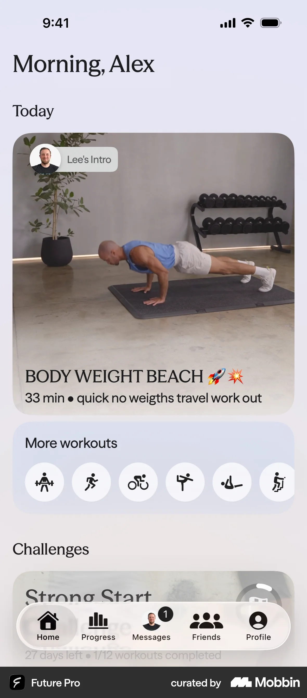
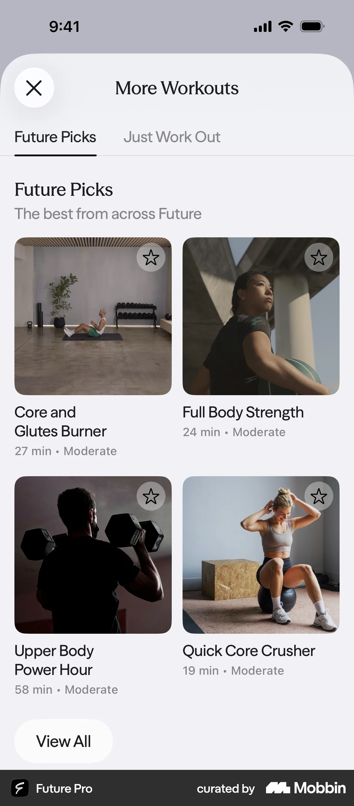
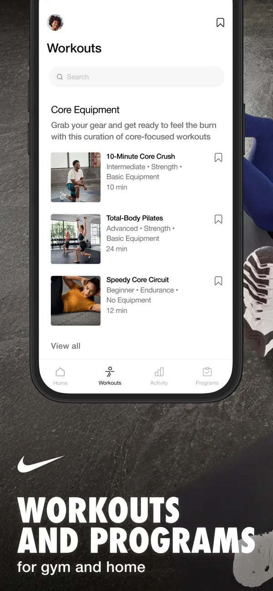
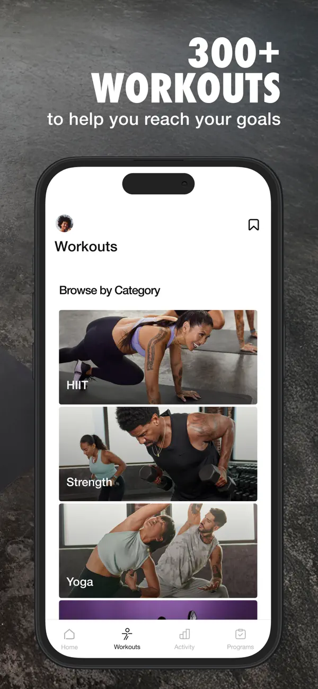

Gymaf / Future Pro · Home
Original saved project reference

One photographic lead. Quiet surroundings. Selective supporting panels.
Gymaf / Future Pro · Library
Original saved project reference

Library tiles are not mini hero banners. Images carry the identity; captions stay simple.
Nike Training Club · List
Nike publisher screenshot · App Store

Vertical rows for comparing content. One neutral surface across header and list.
Nike Training Club · Categories
Nike publisher screenshot · App Store

Wide imagery makes the category distinct. No repeated pastel cutout-box system.